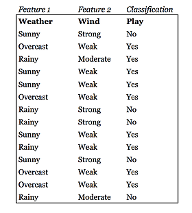

<section class="projects">
  <div class="container">
    <h2 class="title projects__title">TrainSet Academy</h2>

    <div class="cardSection">
      <div class="navigationSlider">
        <div class="navigationSlider__arrow swiper-button-prev"></div>

        <div class="navigationSlider__container swiper-container">
          <div class="navigationSlider__wrapper swiper-wrapper">
            <a href="#" class="navigationSlider__link swiper-slide active">Doks</a>
            <a href="#" class="navigationSlider__link swiper-slide">Blog</a>
            <a href="#" class="navigationSlider__link swiper-slide">Training</a>
          </div>
        </div>

        <div class="navigationSlider__arrow swiper-button-next"></div>
      </div>

      @@include("./_navUlListContetnt.html")

      <div class="paragraph cardSection__paragraph">
        <h6 class="paragraph__title paragraph__title_BG">1. Introduction</h6>

        <p class="paragraph__text">
          Naive Bayes is so ‘naive’ because it assumes that all of the features in a data set are equally important and
          independent. These assumptions are rarely true in real world scenario, however Naive Bayes algorithm sometimes performs
          surprisingly well. This is the supervised learning algorithm used for both classification and regression. Its advantage
          is that it requires very small computational power and as a result works fast even with large data.
        </p>
      </div>

      <div class="paragraph cardSection__paragraph">
        <h6 class="paragraph__title paragraph__title_BG">2. Key Terms</h6>

        <ul class="paragraph__list paragraph__list_dots-type paragraph__text">
          <li>Prior probability is the proportion of dependent variable (target) in the data set.</li>
          <li>
            Likelihood is the probability of particular classification a given observation in presence of some other variable.
          </li>

          <li>Marginal likelihood is the proportion of independent variable (predictor) in the data set.</li>
        </ul>

        <p class="paragraph__text">
          These terms might not be clear to you. Let’s dive into an example that shows what exactly Naive Bayes does, with an
          indication of these terms.
        </p>
      </div>

      <div class="paragraph cardSection__paragraph">
        <h6 class="paragraph__title paragraph__title_BG">3. Example with Explanation</h6>

        <p class="paragraph__text">
          Below I have a training data set of weather and corresponding target variable ‘Play’ (suggesting possibilities of
          playing). Now, we need to classify whether players will play or not based on weather condition. Let’s follow the below
          steps to perform Naive Bayes:
        </p>

        <ul class="paragraph__list paragraph__list_dots-type paragraph__text">
          <li>Step 1: Convert the data set into a frequency table (also called contingency table)</li>
          <li>Step 2: Create Likelihood table.</li>
          <li>
            Step 3: Use Naive Bayesian equation to calculate the posterior probability for each class. The class with the highest
            posterior probability is the outcome of prediction.
          </li>
        </ul>

        <p class="paragraph__text paragraph__text_bold paragraph__text_big">3.1. Step 1 and Step 2</p>

        <p class="paragraph__text">
          Let’s go over the first two steps. These steps will also help us understand prior probability, likelihood and marginal
          likelihood.
        </p>

        <div class="nestedPicture cardSection__nestedPicture">
          <div class="nestedPicture__image"></div>
        </div>

        <p class="paragraph__text">
          The terms Likelihood, Marginal Likelihood, and Prior Probability (or Class Prior Probability, as it is related to
          classes “Yes” or “No”) that were mentioned above are shown below
        </p>

        <div class="nestedPicture cardSection__nestedPicture">
          <div class="nestedPicture__image"></div>
        </div>

        <p class="paragraph__text">So, we can now see that:</p>

        <ul class="paragraph__list paragraph__list_dots-type paragraph__text">
          <li>Likelihood = P (Feature & #124 Class)</li>
          <li>Marginal Likelihood = P (Feature)</li>
          <li>Prior Likelihood = P (Class)</li>
        </ul>

        <p class="paragraph__text">
          Likelihood is just a probability of a feature within a class. For example, if we want to calculate P(Sunny $$ $$ “Yes”),
          where Sunny is a feature, and “Yes” is a class, we will count all “Yes”es, or all times we went to Play, (and ignore
          “No”s) when we had “Sunny” weather, divided by the overall observed days in our data set.
        </p>

        <p class="paragraph__text">
          Marginal Likelihood is a probability of a feature. For example, if we want to calculate P(Sunny), we will count all the
          Sunny days divided by the overall observed days in our data set.
        </p>
        <p class="paragraph__text">
          Prior Likelihood or Class Prior Probability is a probability of a class. For example, if we want to calculate P(“No”),
          we will count all the “No”s, or, the days we did not go to Play, divided by the overall observed days in our data set.
        </p>
        <p class="paragraph__text">
          Posterior probability is the revised probability of an event occurring after taking into consideration new information.
          It will be discussed in more details later in this article.
        </p>

        <p class="paragraph__text paragraph__text_bold paragraph__text_big">3.2. Step 3</p>

        <p class="paragraph__text">
          Use Bayes’ Formula to calculate the posterior probability for each class. The class with the highest posterior
          probability is the outcome of prediction.
        </p>

        <div class="nestedPicture cardSection__nestedPicture">
          <div class="nestedPicture__image"></div>
        </div>

        <p class="paragraph__text">
          In formula above ’c’ denotes class and ’x’ denotes features. Next, let’s look at P(x). As you can see, the denominator
          contains the only term that is a function of the data (features) - it is not a function of the class we are currently
          looking at. Thus, it will be the same for all the classes. Traditionally in Naive Bayes Classification, we drop this
          denominator as it does not impact the final outcome of the classifier in order to make the prediction:
        </p>
        <p class="paragraph__text">||</p>
        <p class="paragraph__text">To make it more interesting, let’s assume we have an the additional feature - Wind:</p>

        <div class="nestedPicture cardSection__nestedPicture">
          <div class="nestedPicture__image"></div>
        </div>
        <p class="paragraph__text">Let’s assume we want to predict the class for the data with the following features:</p>
        <p class="paragraph__text">
          In order to make a prediction we need to compare posterior probabilities for each class after observing the input data.
          For this purpose we will use the expression (1). Do not forget, that Naive Bayes assumes independence of features. In
          order not to inflate our formulas we will use the following notation: ’X1’ for ’Weather’, ’X2’ for ’Wind’ and ’C’ for
          ’Class’
        </p>
        <p class="paragraph__text">
          First, we estimate the probability for going to Play (i.e. the class = “Yes”) for Wind = Moderate, Weather = Sunny:
        </p>
        <p class="paragraph__text">TBD….</p>
      </div>
    </div>

    @@include("./_fixedArrow.html")
  </div>
</section>
